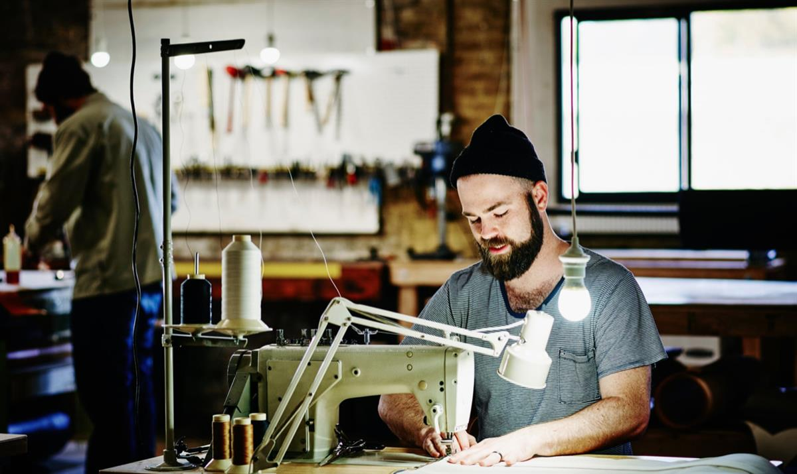
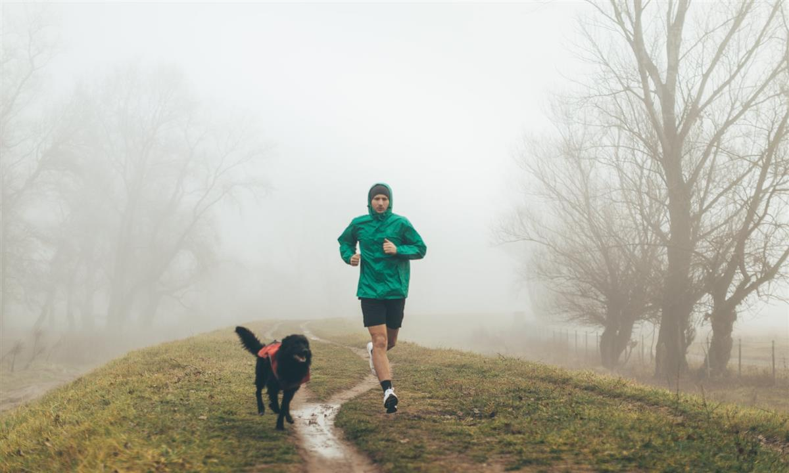
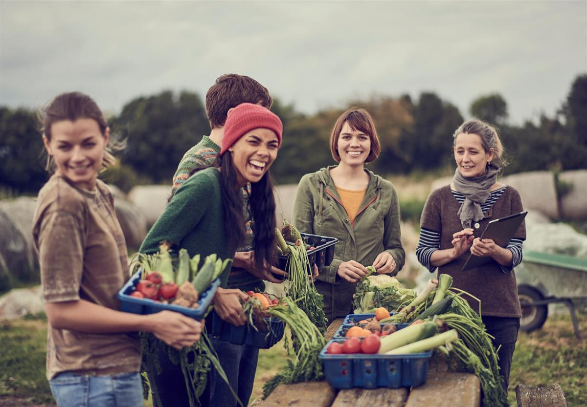
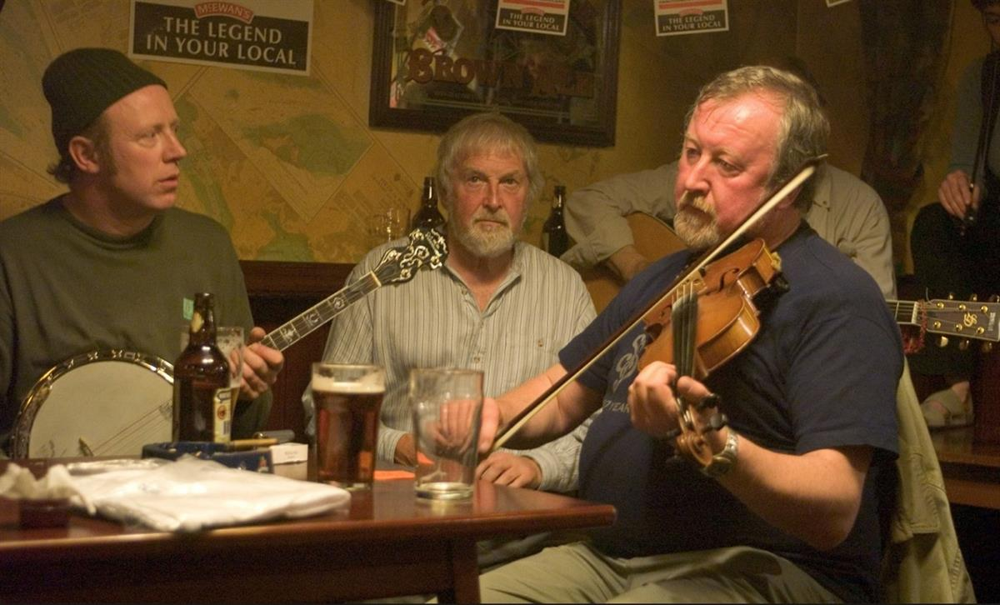

From freecycling to Fairphones: 24 ways to lead an anti-capitalist life in a capitalist world
We asked readers for their thoughts on ‘non‑capitalist living’ and were deluged with replies. Here are their ideas for everyday ways to buck the system
Mon 10 Dec 2018 06.00 GMT
Set up a collective bike workshop ... and learn to fix bikes while engaging with your community. Photograph: CommerceandCultureAgency/Getty Images
As the new Amazon advert goes, can you feel it? Amid the encroaching dark and increasingly foul weather, December is synonymous with stampedes to the supermarket, endless online clicks and the massed roar of delivery lorries – or, to be reductive about it, capitalism at its most joyful and triumphant.
Clearly, though, such things are only part of who we are, even at this time of year. As the American activist Rebecca Solnit puts it in her short but brilliant book Hope in the Dark: “Vast amounts of how we live our everyday lives – our interactions with and commitments to family lives, friendships, avocations, membership in social, spiritual and political organisations – are in essence non-capitalist or even anti-capitalist, full of things we do for free, out of love and on principle.”
The internet has made these deeply political activities even more visible. From growing your own food, through refusing to buy a car, on to freecycling and volunteering, there are no end of ways that people quietly reject the imperatives of pounds and profit, and thousands of initiatives and organisations that allow them to do so.
When I asked Guardian readers recently for examples of “everyday things that represent non-capitalist living”. I received a deluge of replies, full of very useful advice and an appealing spirit of qualified hope. “I am frequently filled with despair at the way things are going in the world at the moment, and doing this small thing at least makes me feel as though I’m doing something positive,” said one participant, which gets to the heart of the idea, and the responses collected here.
Freecycle as much as possible
Millions of us know the basics of freecycling: when you’re lumbered with something you either don’t want or don’t need, you can connect via the internet with someone for whom it might have a use. Until 2009, the big player in this field was the Freecycle network, founded in Arizona in 2003 – but a disagreement about allegedly heavy-handed management and the stifling of local initiatives saw the birth of the UK group Freegle, which has about 2.5 million members. Both were recommended by scores of readers, who are evidently luxuriating in less cluttered lives, and – to cite a few local odds and ends I found offered online – free beds, pianos, bikes, solitary wing mirrors and propane gas canisters, not to mention a “bag of makeup and toiletries, opened but still usable”.
Try the non-digital version
Chris Everitt lives in Berlin. “There’s a German concept of leaving Sperrmüll – household objects you don’t want – on the street outside,” he says. “People can just take them, but if they’re still there the next day they’re collected as refuse. We have a little covered alleyway just off our high street where people leave things all the time: books, furniture, clothes, knick-knacks, even food. If you see something useful, you can just take it, and when you have something that no longer serves you in your life, you can place it there. Within a few hours it will be gone and part of someone else’s life.”
Make your own clothes

Photograph: Thomas Barwick/Getty Images
“I no longer buy clothes,” says Clea Whitley, 33, from London. “I’ve spent the past 11 months learning how to make them myself. I do have to buy fabric – organic and natural fibres as much as possible, and only from small, independent haberdashers – and clothing patterns, but I only buy what I need, and there’s hopefully no child labour, toxic chemicals or animal cruelty involved.” If this sounds like too much effort, you can always just cut down the volume of clothes you own.
Stop buying soap
This may not be for everyone, and is certainly complicated. But a reader who wishes to remain anonymous says: “I haven’t bought washing detergent, shampoo or conditioner since June. I wash my hair with soapnut liquid followed by apple cider vinegar. It takes a bit of pre-planning because the soapnut liquid spoils after a week, but it takes no time at all to boil the soapnuts on a Sunday evening or mix the vinegar with water. Essential oils are added to both the mixtures – this part is crucial, otherwise there would be an unpleasant smell. All my clothes washing is done with some soapnuts thrown in a muslin bag with added drops of eucalyptus oil.” In case anyone was wondering, soapnuts come from the Sapindus mukorossi tree, are part of the lychee family and are available online. What are you waiting for?
Don’t use banks
Kevin McCarron is a civil servant. “I have kept my money out of banks since the mid-1980s,” he says. “I keep my money only in credit unions.” Superficially, this may suggest a rather onerous lifestyle involving old-fashioned regular withdrawals of cash. But no: scores of credit unions offer a payment card called Engage, which also works with Google Pay.
Ditch the gym

Photograph: AleksandarNakic/Getty Images
A 23-year-old sociology graduate who lives in Salford, Greater Manchester, writes: “I once had a gym membership: £25 a month to be breathing in warm air laced with sweat, and listening to extremely loud pop music, forever showing off and promoting the glamorous, indulgent lifestyle that capitalism can provide. I also found that much more pressure was placed on me to obtain an ‘ideal’ weight and body shape because of the functions on machines, such as calorie counts, effort level and speed. I now enjoy jogging in the park, where I can be in a peaceful environment. I allow myself time to breathe and enjoy nature while exercising, in what I believe is a much healthier and productive way. There are no mirrors to show you how ‘good’ or ‘bad’ you look, and no measures of productivity, which may allow someone to put themselves down or pump their ego up. Just pure, natural exercise, which our bodies know how to do without a treadmill.”
Set up a collective bike workshop
“As a volunteer, I co-run a community bicycle workshop, helping people repair their bikes,” said a reader in Essex. “We have built a team of local volunteers and open the workshop twice a week all year round. Anyone can drop in and we’ll help them use the right tools and fix any kind of problem.”
Quit Facebook, Twitter and Instagram
“I have no social media accounts, which is a massive help as I don’t find myself lusting after influencers’ latest ‘fashion steals’ or their new ‘favourite items’,” says another anonymous anti-capitalist. “Not having social media minimises my exposure to advertising.”
Root through rubbish
“One thing that gives me perverse joy is finding great stuff in skips,” writes a resident of Manchester. “I have found thousands of pounds’ worth of gear such as radiators, doors, stained glass, tiles and stone flooring, joists and floorboards, which I have used in my own home or passed on.”
Found a community interest company
CICs let you help the community with fewer of the demands that are placed on charities – as Miles Berkley, who lives in Eastbourne, well knows. “I volunteer as a director of a local digital CIC that provides opportunities for seven- to 17-year-olds to develop their skills through projects and work experience,” he says. “Also I’m part of a group that has formed another CIC to take over a theatre, which will combat loneliness in our community. The rewards of stronger connections in the town and people feeling loved are worth it.”
Make your own spreadable butter
A small contribution, perhaps, but creditably ingenious. You just have to mix butter with oil, preferably something without too strong a taste. “It’s easier to spread, and reduces the amount of butter we use,” advises an anonymous Guardian reader from the home counties. “It’s an alternative to spreads in plastic tubs, and those that use palm oil. Although I am concerned about the treatment of cows, I don’t contribute to the destruction of Borneo’s forests, which are the habitat of orangutans. Orangutans are endangered. Cows are not.”
Stop buying Cillit Bang
Not so long ago, one respondent had a look around her kitchen and bathroom and came to a watershed conclusion. “I systematically assessed every single cleaning product as they ran out, then decided what better product I would replace it with, if at all,” she says. “Most household cleaning products have been replaced with a homemade mix of white vinegar and water, 1:3 parts. Bicarbonate of soda works, too.”
Go online, then visit the library
Photograph: Peter Cade/Getty Images
“Search for books on Amazon, read the reviews and then switch to the public library website to make an online reservation for £1,” advises Kath, from Oxford. Obviously, this may be difficult if austerity has done for your local library service, but it’s still a good idea. Libraries, in fact, came up quite a lot in people’s responses. A reader from Austin, Texas, called Sarah got in touch to pay tribute to their non-capitalistic wonders. “Social and civic institutions like libraries are the closest thing Americans have to palaces,” she says. “We can walk among a wealth of riches, being inspired by not jewels, but ideas and stories.”
Allotments are the answer to almost everything
“Keeping fit by cultivating the allotment means no gym fees,” offers a retired art teacher. “The excess produce is handed out to people as we walk home after harvesting. We are up the allotment most days from May to September and probably give out produce to about four people each week, but not always the same people.” She goes on: “In summer we are self-sufficient as far as vegetables are concerned, and in winter we have enough potatoes, squash and onions to use until March. In autumn, jams and chutney are made and passed out to friends and helpers.” As seen with Jeremy Corbyn’s allotment, this is an aspect of 21st-century British socialism that deserves more attention.
Share your food

Rachel Cox lives in Keyworth, near Nottingham, and echoes some of the same themes. “Since 2010 I’ve been involved with a project in my village called Abundance,” she says. “Every year throughout the summer and autumn we go and pick fruit for people from their gardens (generally older people who can’t do it themselves). Whatever they don’t want we then give away to local residents, mainly through a stall on a Saturday morning.”
Photograph: Mike Harrington/Getty Images
Share discarded food
“I volunteer for Manchester FoodCycle,” says 42-year-old Jo Harvey. “Once a week we collect surplus food from local shops and supermarkets, then in the evening we make a three-course meal from the ingredients, free for anyone who turns up. We use a local kitchen and hall for free, the meal is cooked by volunteers and the food is free as it would otherwise be thrown away.”
Shop selectively
Obvious, but a big part of anyone’s anti-capitalist armoury. “I’ve actively chosen not to buy from certain companies for several years,” says a reader who wants to remain nameless. “This includes Topshop/Philip Green-owned companies, Mike Ashley companies, restaurant chains owned by big finance companies, Amazon and eBay. I don’t use companies whose tax activity is suspect or who I think dominate sections of business that could be open to others. I won’t go to Starbucks, Costa, Caffe Nero etc. And I use local shops as often as possible.”
If you’re feeling really ambitious, try a smallholding
Basically an allotment on steroids. “We live on a smallholding,” says John Ellis, 71. “Winter heating is mainly log-burners (cut from our own land) with some night storage heaters. We grow our own vegetables and run some livestock, although meat-eating has been reduced considerably.”
Join a climate action group
“I’m part of Sustainable Didcot, one of a network of local carbon action groups,” offers a reader called Emma. “These are grassroots organisations working on anti-capitalist endeavours – edible public planting, composting coffee grounds from cafes, networks of places where you can refill your water bottle, pop-up shops that sell food without packaging and Freecycle events where you can swap unwanted things.”
Don’t drive
“I have never driven a car and aim never to,” says Sara Gaynor. “I decided from 1988, after living in Copenhagen, that I would never be part of car culture and all that goes with it – petrol, pollution, traffic jams, supporting the car, oil and advertising industries. I cycle every day to work. I do my shopping using my bike, and my kids were brought up travelling around by bike and public transport.” She also attends Critical Mass events: the idea originated in early-90s San Francisco, and involves mass gatherings of cyclists who temporarily reclaim the streets, usually on the last Friday of the month.
Try a Fairphone
The manufacture of smartphones often looks like a morass of appalling labour standards and toxic materials. Hence the Fairphone – a Dutch invention that uses the Android operating system, and offers a more ethical product than most mobiles. Charles, a 22-year-old reader from London, is a fan. “The major benefit for me is the phone’s modularity,” he says. “Each individual piece can be sent in to be repaired or updated, something all other phone companies, with their programmed obsolescence, actively discourage.”
Go to the pub when it is live‑music night

Photograph: Doug Houghton/Alamy Stock Photo
“You can make your own entertainment by walking into a pub where a folk session is going on and just joining in,” says Michael, from Oxford. “I only discovered this a few years ago when the young musician in the family turned into a crazy folkie and encouraged me to join in. It negates the whole class divide of overhyped and overpaid celebrity performers versus paying audience – everybody can take part. No money changes hands, except for buying drinks – which also helps saving pubs.”
Always claim compensation for train delays
A reader from Worcester says he claims compensation for “every delay possible” from privatised rail companies. This presumably has the dual effect of undermining their profitability while exacting a polite kind of revenge for their regular uselessness.
Use your TV remote
Someone who wishes to remain anonymous got in touch with a vast amount of advice, much of which concerned making sure you never work too hard. “You should always have the energy when you get home to enjoy the evening,” he says. That’s pretty good, but as a means of sticking it to the Man and stepping outside neoliberalism, there is no beating this pearl of wisdom: “Turn the sound down when the adverts are on.”
SOURCE: THE GUARDIAN